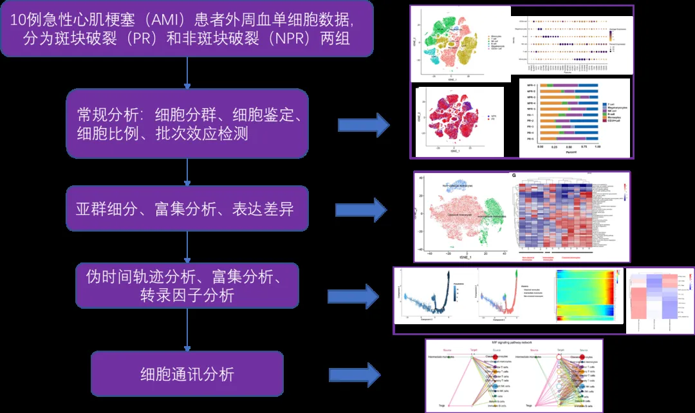
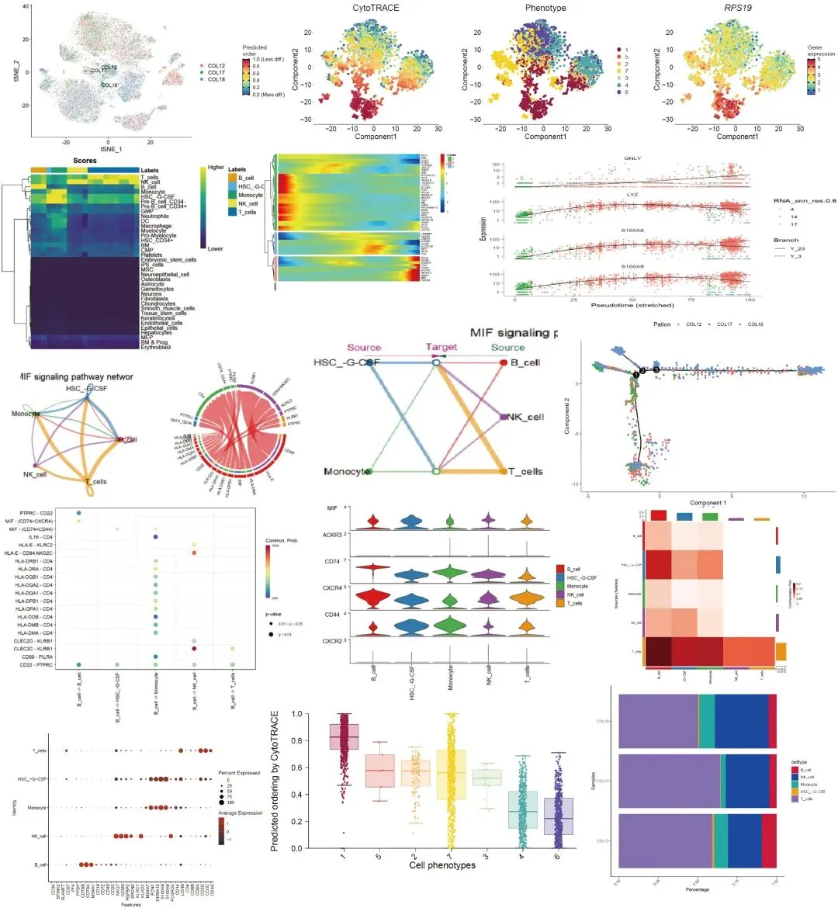
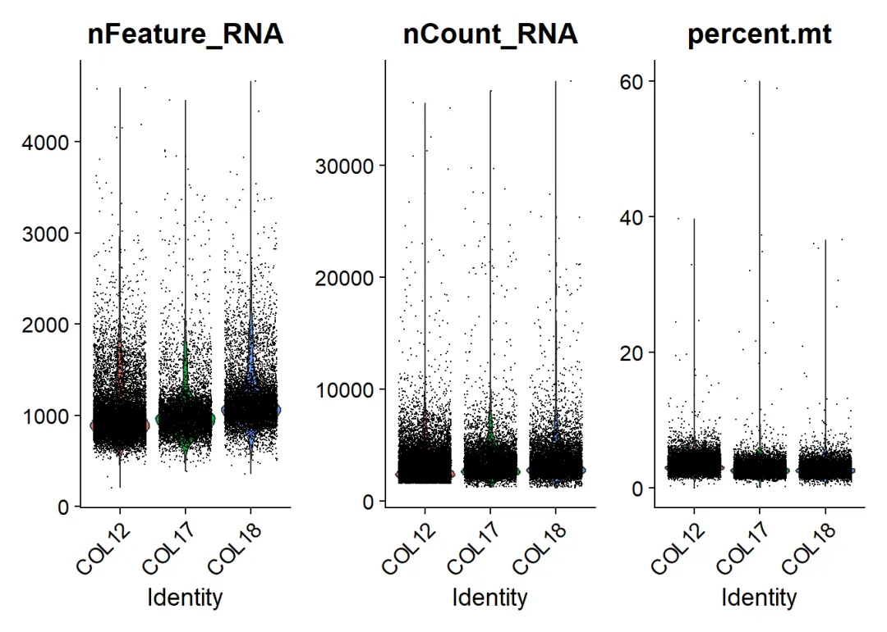
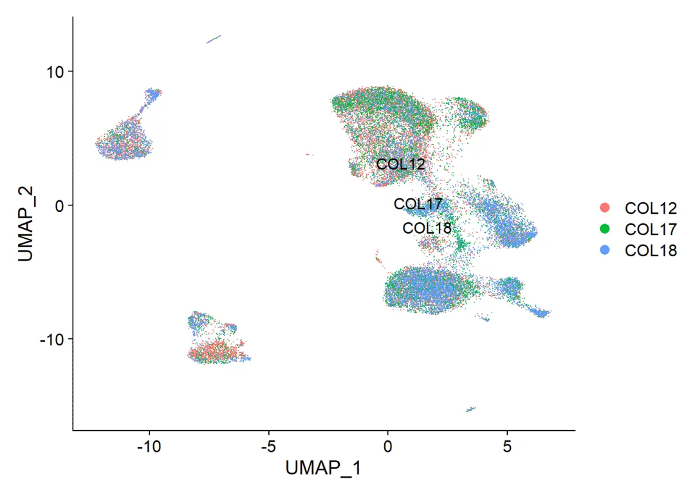
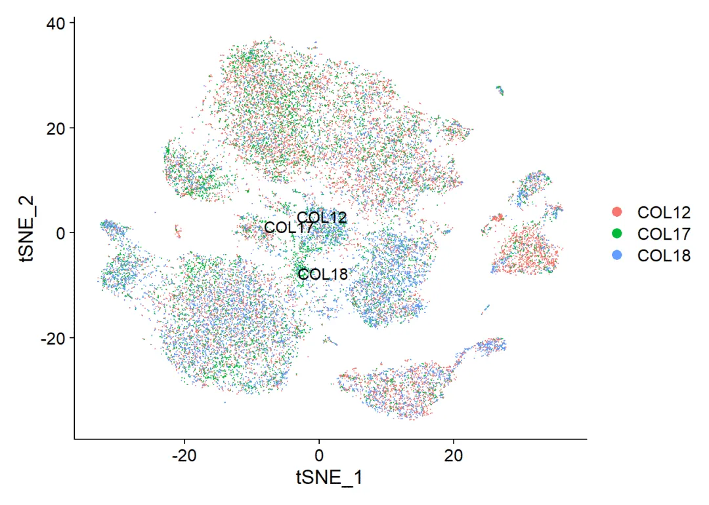
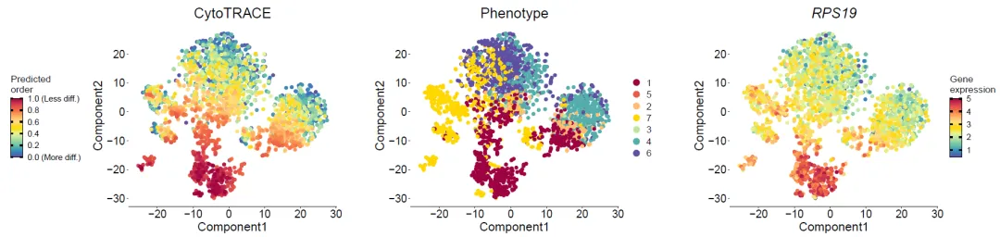

单细胞复写|3.急性心肌梗塞(AMI)外周血scRNA-Seq分析实战(链接重置)
原文：https://mp.weixin.qq.com/s?__biz=MzAwMzIzOTk5OQ==&mid=2247501145&idx=2&sn=12c2e8d104ad343fc13acb8cda266e6c&chksm=9b3cbc09ac4b351f4ed708a0ed577a21f48ccb0d4173aed94a027b4170147ab85931ee51d1e5#rd 合集：单细胞教程全收录 / 全文复现

文章详细解读可见：
急性心肌梗塞(AMI)外周血scRNA-Seq分析流程及结果梳理
一、基本信息
1. 原文标题
Single-Cell RNA Sequencing of Peripheral Blood Mononuclear Cells From Acute Myocardial Infarction
文献解读可见：
**2.**文章链接
https://www.ncbi.nlm.nih.gov/pmc/articles/pmid/35844519/
3. 物种
人类患者
4. 数据链接
(https://ngdc.cncb.ac.cn/); PRJCA008946.
5. 细胞类型
外周血单核细胞的单细胞RNA测序
6. 复现图片集锦
该文的分析思路为：

本次推送的主要复现图片为：

7. 测试文件及可复制代码
可在文末订阅或联系客服微信Biomamba领取~
本期复现过程：
1. 用Suret包处理单细胞数据，并绘图
代码如下：
rm(list = ls())
options(stringsAsFactors = F)
library(dplyr)
## Warning: 程辑包'dplyr'是用R版本4.2.2 来建造的
##
## 载入程辑包：'dplyr'
## The following objects are masked from 'package:stats':
##
## filter, lag
## The following objects are masked from 'package:base':
##
## intersect, setdiff, setequal, union
library(Seurat)
## Warning: 程辑包'Seurat'是用R版本4.2.3 来建造的
## Attaching SeuratObject
library(patchwork)
all.data <- Read10X(data.dir = "CRC_PBMC/")
dim(all.data)
## [1] 33694 140281
allcell <- CreateSeuratObject(counts = all.data,
project = "CRC",
min.cells = 3,
min.features = 200)
## Warning: Feature names cannot have underscores ('_'), replacing with dashes
## ('-')
#整理数据 根据AAACCTGAGACGCAAC_COL07_CRC 重新定义meta
library(stringr)
## Warning: 程辑包'stringr'是用R版本4.2.3 来建造的
meta <- data.frame(allcell@meta.data,str_split(rownames(allcell@meta.data),"_",simplify=T))
colnames(meta)[4:6] <- c('ID','Pation','orig')
allcell@meta.data <- meta
pbmc <- allcell[,allcell@meta.data$orig == 'PBMC']
pbmc$orig.ident <- pbmc$Pation
pbmc@active.ident <- factor(pbmc$Pation)
#质控：提取nFeature_RNA在200~2500之间；线粒体基因占比在25%以下。
pbmc[["percent.mt"]] <- PercentageFeatureSet(pbmc, pattern = "^MT-")
VlnPlot(pbmc,
features = c("nFeature_RNA",
"nCount_RNA",
"percent.mt"), ncol = 3)

pbmc <- subset(pbmc,
subset = nFeature_RNA > 200 &
nFeature_RNA < 2500 &
percent.mt < 25)
#标准流程：NormalizeData，FindVariableFeatures，ScaleData，RunPCA，harmony
sce=pbmc
sce
## An object of class Seurat
## 25121 features across 26752 samples within 1 assay
## Active assay: RNA (25121 features, 0 variable features)
sce <- NormalizeData(sce,
normalization.method = "LogNormalize",
scale.factor = 1e4)
sce <- FindVariableFeatures(sce)
sce <- ScaleData(sce)
## Centering and scaling data matrix
sce <- RunPCA(sce, features = VariableFeatures(object = sce))
## PC_ 1
## Positive: IL32, RPS6, RPS4X, RPS18, RPS12, EEF1A1, CD3D, TRAC, RPL13, CD69
## IL7R, TXNIP, TRBC2, CD7, LDHB, CXCR4, TRBC1, CD3G, LTB, RPL34
## CCR7, CD27, ISG20, ITM2A, ZFP36L2, LEF1, CCL5, CST7, MAL, NOSIP
## Negative: CST3, LYZ, FCN1, CSTA, LST1, SERPINA1, S100A9, CXCL8, S100A8, CFD
## IL1B, CD68, FCER1G, MNDA, TYMP, AIF1, S100A12, VCAN, SPI1, MS4A6A
## CD14, CLEC7A, FTL, FTH1, KLF4, CLEC12A, SLC7A7, CTSS, CYBB, NAMPT
## PC_ 2
## Positive: NKG7, CST7, CCL5, GZMH, GZMB, GNLY, GZMA, FGFBP2, PRF1, KLRD1
## CTSW, FCGR3A, CMC1, HOPX, TRDC, KLRF1, SPON2, CCL4, CLIC3, EFHD2
## C12orf75, SRGN, TYROBP, CD63, S100A4, TMSB4X, MATK, IL32, FCRL6, ACTB
## Negative: RPL13, RPL34, LTB, RPS18, RPS6, RPS12, EEF1A1, RPLP1, RPS4X, CCR7
## SELL, IL7R, CD79A, BIRC3, LDHB, MS4A1, IGHD, MAL, LEF1, RCAN3
## CD27, CD79B, GPR183, TXNIP, IGHM, TCL1A, MYC, BANK1, TSHZ2, FCER2
## PC_ 3
## Positive: CD79A, MS4A1, IGHD, CD74, CD79B, HLA-DPB1, BANK1, HLA-DQA1, TCL1A, IGHM
## HLA-DPA1, HLA-DRA, LINC00926, HLA-DQB1, CD22, HLA-DRB1, FCER2, VPREB3, HLA-DQA2, TNFRSF13C
## FCRLA, HLA-DOB, HLA-DMB, MEF2C, BLK, IRF8, CD19, HLA-DMA, FAM129C, HVCN1
## Negative: IL7R, CD3D, TRAC, LDHB, CD3G, MAL, LEF1, NOSIP, VIM, SOCS3
## RPL34, IL32, TRAT1, CD27, RCAN3, LDLRAP1, RPS12, TCF7, SERINC5, OXNAD1
## TSHZ2, TNFAIP3, TRABD2A, CAMK4, CCR7, AIF1, S100A6, C10orf54, ZFP36L2, FLT3LG
## PC_ 4
## Positive: S100A12, VCAN, S100A8, CD14, S100A9, CSF3R, CLEC4E, THBS1, MS4A6A, RNASE6
## LYZ, MGST1, CD36, EREG, LGALS2, CCL3L3, QPCT, FOLR3, RP11-160E2.6, CD163
## CXCL8, KCTD12, FCN1, TREM1, EGR1, ALDH1A1, RP11-1143G9.4, RETN, RBP7, IER3
## Negative: HES4, CSF1R, CKB, CDKN1C, MS4A4A, LRRC25, MS4A7, SIGLEC10, TCF7L2, CTSL
## HMOX1, ADGRE1, LILRB2, OAS1, GPBAR1, LINC01272, ICAM4, CAMK1, BATF3, C1QA
## HCK, LILRA1, TPPP3, CDH23, LYPD2, PILRA, NEURL1, ZNF703, ADGRE2, SECTM1
## PC_ 5
## Positive: JUNB, JUN, GZMK, RGS1, ZFP36, DUSP1, DUSP2, LMNA, CD52, FOS
## CD69, COTL1, BTG2, NFKBIA, S100A10, CD3D, TRAC, S100A4, IER2, TNFAIP3
## PPP1R15A, TMSB4X, KLF6, RP11-138A9.1, CRIP1, ITGB1, ACTB, ANXA1, FAM46C, IFRD1
## Negative: CCR7, FCGR3A, TYROBP, FGFBP2, TXK, GZMB, KLRF1, TXNIP, GNLY, AIF1
## SPON2, TRDC, ADTRP, KLRD1, RPS6, PLAC8, AK5, TSHZ2, SATB1, PRF1
## KIR3DL2, CD7, CLIC3, ACTN1, TRABD2A, SELL, IGFBP7, FHIT, TTC38, ADGRG1
library(harmony)
## 载入需要的程辑包：Rcpp
## Warning: 程辑包'Rcpp'是用R版本4.2.3 来建造的
seuratObj <- RunHarmony(sce, "orig.ident")
## Harmony 1/10
## Harmony 2/10
## Harmony 3/10
## Harmony converged after 3 iterations
## Warning: Invalid name supplied, making object name syntactically valid. New
## object name is Seurat..ProjectDim.RNA.harmony; see ?make.names for more details
## on syntax validity
names(seuratObj@reductions)
## [1] "pca" "harmony"
seuratObj <- RunUMAP(seuratObj, dims = 1:30,
reduction = "harmony")
## Warning: The default method for RunUMAP has changed from calling Python UMAP via reticulate to the R-native UWOT using the cosine metric
## To use Python UMAP via reticulate, set umap.method to 'umap-learn' and metric to 'correlation'
## This message will be shown once per session
## 10:51:42 UMAP embedding parameters a = 0.9922 b = 1.112
## 10:51:42 Read 26752 rows and found 30 numeric columns
## 10:51:42 Using Annoy for neighbor search, n_neighbors = 30
## 10:51:42 Building Annoy index with metric = cosine, n_trees = 50
## 0% 10 20 30 40 50 60 70 80 90 100%
## [----|----|----|----|----|----|----|----|----|----|
## **************************************************|
## 10:51:46 Writing NN index file to temp file C:\Users\ZHAOQI~1\AppData\Local\Temp\Rtmp25RGIr\file58705ffa7f70
## 10:51:46 Searching Annoy index using 1 thread, search_k = 3000
## 10:51:55 Annoy recall = 100%
## 10:51:55 Commencing smooth kNN distance calibration using 1 thread with target n_neighbors = 30
## 10:51:57 Initializing from normalized Laplacian + noise (using irlba)
## 10:51:59 Commencing optimization for 200 epochs, with 1212736 positive edges
## 10:52:29 Optimization finished
seuratObj <- RunTSNE(seuratObj, dims = 1:30,
reduction = "harmony")
pdf("umap-tsne-orit.pdf")
DimPlot(seuratObj,reduction = "umap",label=T )
DimPlot(seuratObj,reduction = "tsne",label=T )
dev.off()
## png
## 2
DimPlot(seuratObj,reduction = "umap",label=T )

DimPlot(seuratObj,reduction = "tsne",label=T )

sce=seuratObj
sce <- FindNeighbors(sce, reduction = "harmony",
dims = 1:15)
## Computing nearest neighbor graph
## Computing SNN
sce.all=sce
if(T){
library(ggplot2)
library(clustree)
library(cowplot)
#设置不同的分辨率，观察分群效果(选择哪一个？)
for (res in c(0.01, 0.05, 0.1, 0.2, 0.3, 0.5,0.8,1)) {
sce.all=FindClusters(sce.all, #graph.name = "CCA_snn",
resolution = res, algorithm = 1)
}
colnames(sce.all@meta.data)
apply(sce.all@meta.data[,grep("RNA_snn",colnames(sce.all@meta.data))],2,table)
#画图
p1_dim=plot_grid(ncol = 3, DimPlot(sce.all, reduction = "umap", group.by = "RNA_snn_res.0.01") +
ggtitle("louvain_0.01"), DimPlot(sce.all, reduction = "umap", group.by = "RNA_snn_res.0.1") +
ggtitle("louvain_0.1"), DimPlot(sce.all, reduction = "umap", group.by = "RNA_snn_res.0.2") +
ggtitle("louvain_0.2"))
p1_dim
ggsave(plot=p1_dim, filename="Dimplot_diff_resolution_low.pdf",width = 14)
p1_dim=plot_grid(ncol = 3, DimPlot(sce.all, reduction = "umap", group.by = "RNA_snn_res.0.8") +
ggtitle("louvain_0.8"), DimPlot(sce.all, reduction = "umap", group.by = "RNA_snn_res.1") +
ggtitle("louvain_1"), DimPlot(sce.all, reduction = "umap", group.by = "RNA_snn_res.0.3") +
ggtitle("louvain_0.3"))
p1_dim
ggsave(plot=p1_dim, filename="Dimplot_diff_resolution_high.pdf",width = 18)
p2_tree=clustree(sce.all@meta.data, prefix = "RNA_snn_res.")
p2_tree
ggsave(plot=p2_tree, filename="Tree_diff_resolution.pdf")
}
## Warning: 程辑包'ggplot2'是用R版本4.2.3 来建造的
## Warning: 程辑包'clustree'是用R版本4.2.2 来建造的
## 载入需要的程辑包：ggraph
##
## 载入程辑包：'cowplot'
##
## The following object is masked from 'package:patchwork':
##
## align_plots
## Modularity Optimizer version 1.3.0 by Ludo Waltman and Nees Jan van Eck
##
## Number of nodes: 26752
## Number of edges: 862836
##
## Running Louvain algorithm...
## Maximum modularity in 10 random starts: 0.9936
## Number of communities: 4
## Elapsed time: 5 seconds
## Modularity Optimizer version 1.3.0 by Ludo Waltman and Nees Jan van Eck
##
## Number of nodes: 26752
## Number of edges: 862836
##
## Running Louvain algorithm...
## Maximum modularity in 10 random starts: 0.9796
## Number of communities: 7
## Elapsed time: 6 seconds
## Modularity Optimizer version 1.3.0 by Ludo Waltman and Nees Jan van Eck
##
## Number of nodes: 26752
## Number of edges: 862836
##
## Running Louvain algorithm...
## Maximum modularity in 10 random starts: 0.9676
## Number of communities: 7
## Elapsed time: 7 seconds
## Modularity Optimizer version 1.3.0 by Ludo Waltman and Nees Jan van Eck
##
## Number of nodes: 26752
## Number of edges: 862836
##
## Running Louvain algorithm...
## Maximum modularity in 10 random starts: 0.9478
## Number of communities: 11
## Elapsed time: 6 seconds
## Modularity Optimizer version 1.3.0 by Ludo Waltman and Nees Jan van Eck
##
## Number of nodes: 26752
## Number of edges: 862836
##
## Running Louvain algorithm...
## Maximum modularity in 10 random starts: 0.9335
## Number of communities: 12
## Elapsed time: 6 seconds
## Modularity Optimizer version 1.3.0 by Ludo Waltman and Nees Jan van Eck
##
## Number of nodes: 26752
## Number of edges: 862836
##
## Running Louvain algorithm...
## Maximum modularity in 10 random starts: 0.9084
## Number of communities: 15
## Elapsed time: 6 seconds
## Modularity Optimizer version 1.3.0 by Ludo Waltman and Nees Jan van Eck
##
## Number of nodes: 26752
## Number of edges: 862836
##
## Running Louvain algorithm...
## Maximum modularity in 10 random starts: 0.8757
## Number of communities: 19
## Elapsed time: 7 seconds
## Modularity Optimizer version 1.3.0 by Ludo Waltman and Nees Jan van Eck
##
## Number of nodes: 26752
## Number of edges: 862836
##
## Running Louvain algorithm...
## Maximum modularity in 10 random starts: 0.8577
## Number of communities: 21
## Elapsed time: 6 seconds
## Saving 14 x 5 in image
## Saving 18 x 5 in image
## Saving 7 x 5 in image
#利用SingleR 识别细胞类型 自动注释
if(T){
sce.all
library(SingleR)
library(celldex)
library(scater)
library(SummarizedExperiment)
#人
hpca.se <- HumanPrimaryCellAtlasData()
#save(hpca.se,file="hpca.se.RData")
#saveRDS(hpca.se,file="hpca.se.RDS")
test.seu <- sce.all
sce_for_SingleR <- GetAssayData(test.seu, slot="data")
sce_for_SingleR
clusters <- test.seu@meta.data$seurat_clusters
pred.hesc <- SingleR(test = sce_for_SingleR,
ref = hpca.se,
labels = hpca.se$label.main,
method = "cluster",
clusters = clusters,
assay.type.test = "logcounts",
assay.type.ref = "logcounts")
save(pred.hesc,file = "pred.hesc.rdata")
table(pred.hesc$labels)
celltype <- data.frame(ClusterID=rownames(pred.hesc),
celltype=pred.hesc$labels,
stringsAsFactors = F)
test.seu@meta.data$singleR = celltype[match(clusters,celltype$ClusterID),'celltype']
DimPlot(test.seu,reduction = 'tsne',group.by ="singleR" )
#细胞注释的可靠性
print(plotScoreHeatmap(pred.hesc))
pdf("singleR-plotScoreHeatmap.pdf")
print(plotScoreHeatmap(pred.hesc))
dev.off()
sce.all@meta.data$singleR = celltype[match(sce.all$seurat_clusters,celltype$ClusterID),'celltype']
DimPlot(sce.all,reduction = 'tsne',group.by ="singleR" )
}
## 载入需要的程辑包：SummarizedExperiment
## 载入需要的程辑包：MatrixGenerics
## 载入需要的程辑包：matrixStats
## Warning: 程辑包'matrixStats'是用R版本4.2.3 来建造的
##
## 载入程辑包：'matrixStats'
##
## The following object is masked from 'package:dplyr':
##
## count
##
##
## 载入程辑包：'MatrixGenerics'
##
## The following objects are masked from 'package:matrixStats':
##
## colAlls, colAnyNAs, colAnys, colAvgsPerRowSet, colCollapse,
## colCounts, colCummaxs, colCummins, colCumprods, colCumsums,
## colDiffs, colIQRDiffs, colIQRs, colLogSumExps, colMadDiffs,
## colMads, colMaxs, colMeans2, colMedians, colMins, colOrderStats,
## colProds, colQuantiles, colRanges, colRanks, colSdDiffs, colSds,
## colSums2, colTabulates, colVarDiffs, colVars, colWeightedMads,
## colWeightedMeans, colWeightedMedians, colWeightedSds,
## colWeightedVars, rowAlls, rowAnyNAs, rowAnys, rowAvgsPerColSet,
## rowCollapse, rowCounts, rowCummaxs, rowCummins, rowCumprods,
## rowCumsums, rowDiffs, rowIQRDiffs, rowIQRs, rowLogSumExps,
## rowMadDiffs, rowMads, rowMaxs, rowMeans2, rowMedians, rowMins,
## rowOrderStats, rowProds, rowQuantiles, rowRanges, rowRanks,
## rowSdDiffs, rowSds, rowSums2, rowTabulates, rowVarDiffs, rowVars,
## rowWeightedMads, rowWeightedMeans, rowWeightedMedians,
## rowWeightedSds, rowWeightedVars
##
## 载入需要的程辑包：GenomicRanges
## Warning: 程辑包'GenomicRanges'是用R版本4.2.2 来建造的
## 载入需要的程辑包：stats4
## 载入需要的程辑包：BiocGenerics
##
## 载入程辑包：'BiocGenerics'
##
## The following objects are masked from 'package:dplyr':
##
## combine, intersect, setdiff, union
##
## The following objects are masked from 'package:stats':
##
## IQR, mad, sd, var, xtabs
##
## The following objects are masked from 'package:base':
##
## anyDuplicated, aperm, append, as.data.frame, basename, cbind,
## colnames, dirname, do.call, duplicated, eval, evalq, Filter, Find,
## get, grep, grepl, intersect, is.unsorted, lapply, Map, mapply,
## match, mget, order, paste, pmax, pmax.int, pmin, pmin.int,
## Position, rank, rbind, Reduce, rownames, sapply, setdiff, sort,
## table, tapply, union, unique, unsplit, which.max, which.min
##
## 载入需要的程辑包：S4Vectors
## Warning: 程辑包'S4Vectors'是用R版本4.2.2 来建造的
##
## 载入程辑包：'S4Vectors'
##
## The following objects are masked from 'package:dplyr':
##
## first, rename
##
## The following objects are masked from 'package:base':
##
## expand.grid, I, unname
##
## 载入需要的程辑包：IRanges
##
## 载入程辑包：'IRanges'
##
## The following objects are masked from 'package:dplyr':
##
## collapse, desc, slice
##
## The following object is masked from 'package:grDevices':
##
## windows
##
## 载入需要的程辑包：GenomeInfoDb
## Warning: 程辑包'GenomeInfoDb'是用R版本4.2.2 来建造的
## 载入需要的程辑包：Biobase
## Welcome to Bioconductor
##
## Vignettes contain introductory material; view with
## 'browseVignettes()'. To cite Bioconductor, see
## 'citation("Biobase")', and for packages 'citation("pkgname")'.
##
##
## 载入程辑包：'Biobase'
##
## The following object is masked from 'package:MatrixGenerics':
##
## rowMedians
##
## The following objects are masked from 'package:matrixStats':
##
## anyMissing, rowMedians
##
##
## 载入程辑包：'SummarizedExperiment'
##
## The following object is masked from 'package:SeuratObject':
##
## Assays
##
## The following object is masked from 'package:Seurat':
##
## Assays
##
##
## 载入程辑包：'celldex'
##
## The following objects are masked from 'package:SingleR':
##
## BlueprintEncodeData, DatabaseImmuneCellExpressionData,
## HumanPrimaryCellAtlasData, ImmGenData, MonacoImmuneData,
## MouseRNAseqData, NovershternHematopoieticData
##
## 载入需要的程辑包：SingleCellExperiment
## Warning: 程辑包'SingleCellExperiment'是用R版本4.2.2 来建造的
## 载入需要的程辑包：scuttle
## snapshotDate(): 2022-04-26
## see ?celldex and browseVignettes('celldex') for documentation
## loading from cache
## see ?celldex and browseVignettes('celldex') for documentation
# 结合文献 ,查看marker表达， 手动注释细胞
if(F){
#接下来分析，按照分辨率为0.8进行
sel.clust = "RNA_snn_res.0.8"
sce.all <- SetIdent(sce.all, value = sel.clust)
table(sce.all@active.ident)
#saveRDS(sce.all, "sce.all_int.rds")
library(ggplot2)
genes_to_check = c("CD34","SPINK2","SLAMF7","CD27","PF4","PPBP","CD79B","CD79A","MS4A1","CD19","CD72","CD40","CD22","NKG7","GZMB","FGFBP2","SPON2","KLRC1","KLRD1","MS4A7","FCN1","S100A12","S100A9","S100A8","FCGR3A","CD14","LDHB","CD4","CD8B","CD8A","CD3D","CD3E","CD3G")
library(stringr)
p_paper_markers <- DotPlot(sce.all, features = genes_to_check,
assay='RNA' ) + coord_flip()
p_paper_markers
ggsave(plot=p_paper_markers,
filename="check_paper_marker_by_seurat_cluster.pdf",width = 12,height=10)
#singleR
p_paper_markers <- DotPlot(sce.all, features = genes_to_check,
assay='RNA' ,group.by = 'singleR' ) + coord_flip()
p_paper_markers
ggsave(plot=p_paper_markers,
filename="check_paper_marker_by_seurat_cluster.pdf",width = 12,height=10)
#last_markers
genes_to_check = c('PTPRC', 'CD3D', 'CD3E', 'CD4','CD8A',
'CD19', 'CD79A', 'MS4A1' ,
'IGHG1', 'MZB1', 'SDC1',
'CD68', 'CD163', 'CD14',
'TPSAB1' , 'TPSB2', # mast cells,
'RCVRN','FPR1' , 'ITGAM' ,
'C1QA', 'C1QB', # mac
'S100A9', 'S100A8', 'MMP19',# monocyte
'FCGR3A',
'LAMP3', 'IDO1','IDO2',## DC3
'CD1E','CD1C', # DC2
'KLRB1','NCR1', # NK
'FGF7','MME', 'ACTA2', ## fibo
'DCN', 'LUM', 'GSN' , ## mouse PDAC fibo
'MKI67' , 'TOP2A',
'PECAM1', 'VWF', ## endo
'EPCAM' , 'KRT19', 'PROM1', 'ALDH1A1' )
library(stringr)
genes_to_check=str_to_upper(genes_to_check)
genes_to_check
p <- DotPlot(sce.all, features = unique(genes_to_check),
assay='RNA' ) + coord_flip()
p
ggsave('check_last_markers.pdf',height = 11,width = 11)
library(ggplot2)
genes_to_check =list(
CM=c("TTN","MYH7","MYH6","TNNT2") ,
EC=c("VWF", "IFI27", "PECAM1","MGP"),
FB=c("DCN", "C7" ,"LUM","FBLN1","COL1A2"),
MP=c("CD163", "CCL4", "CXCL8","PTPRC"),
SMC=c("ACTA2", "CALD1", "MYH11"),
Tc=c("CD3D","CD3E"),
DC1 = c( 'Clec9a', 'Xcr1', 'Wdfy4'),
DC2 = c('Itgax', 'Sirpa', 'Cd209a'),
mregDCs= c('Ccr7', 'Cd80', 'Cd200', 'Cd247') ,
hypoxia=c('Hif1a', 'Slc2a1', 'Vegfa', 'Hmox1',
'Bnip3', 'Nos2', 'Mmp2', 'Sod3',
'Cited2', 'Ldha'),
peric=c("ABCC9","PDGFRB","RGS5")
)
genes_to_check =list(
Fib=c("Lum","Dcn","Col1a2","Wif1"),
Keratrinocytes=c("Krt1","Krt5","Krt14","Krt15"),
Endo=c("Cldn5","Pecam1","Cdh5","Icam2"),
Melan=c("Oca2","Sox10","Pax3"),
Schwan=c("Mbp","Kcna1"),
Myocy=c("Cspr3","Apobec2","Ckmt2"),
Peric=c("Rgs4","Rgs5","Kcnj8"),
Tc=c("Trbc1","Trbc2","Cxcr6"),
Mast=c("Fcer1a","Cpa3","Alox15","Mcpt8"),
Neutro=c("Fcer1g","S100a8","S100a9","Cd14"),
Mac=c("Lyz2","Adgre1","Mrc1"),
DC=c("Cd74","H2-Eb1"),
Langerhans=c("Cd86","H2-M2","Cd207","Ltc4s"),
cyc=c("Top2a","Mki67")
)
genes_to_check = lapply(genes_to_check, toupper)
p_all_markers=DotPlot(sce.all,
features = genes_to_check,
scale = T,assay='RNA' )+
theme(axis.text.x=element_text(angle=45,hjust = 1))
p_all_markers
ggsave(plot=p_all_markers, filename="check_p_all_markers.pdf",
width = 15 ,height = 8)
}
# 手动注释细胞
if(F){
celltype=data.frame(ClusterID=0:22,
celltype= 'epi' )
#定义细胞亚群
celltype[celltype$ClusterID %in% c( 5,13,18 ),2]='myeloids'
celltype[celltype$ClusterID %in% c(0,1,8,22 ),2]='Tcells'
celltype[celltype$ClusterID %in% c( 2,14),2]='Bcells'
celltype[celltype$ClusterID %in% c( 7),2]='plasma'
celltype[celltype$ClusterID %in% c( 17),2]='fibro'
head(celltype)
celltype
table(celltype$celltype)
sce.all@meta.data$celltype = "NA"
for(i in 1:nrow(celltype)){
sce.all@meta.data[which(sce.all@meta.data$RNA_snn_res.0.8 == celltype$ClusterID[i]),'celltype'] <- celltype$celltype[i]}
table(sce.all@meta.data$celltype)
}
#保存细胞分群结果
# 保存工程文件
save(sce.all,file = "6-10-sce.all-Surat-细胞注释分群结果.RDATA")
``
2. 提取单核细胞，伪时间轨迹分析，根据CytoTRACE验证发育起始位点，转录因子分析
#发育轨迹分析\
options(stringsAsFactors = F)
library(monocle)
## 载入需要的程辑包：Matrix
## Warning: 程辑包'Matrix'是用R版本4.2.3 来建造的
##
## 载入程辑包：'Matrix'
## The following object is masked from 'package:S4Vectors':
##
## expand
## 载入需要的程辑包：VGAM
## Warning: 程辑包'VGAM'是用R版本4.2.3 来建造的
## 载入需要的程辑包：splines
## 载入需要的程辑包：DDRTree
## Warning: 程辑包'DDRTree'是用R版本4.2.3 来建造的
## 载入需要的程辑包：irlba
library(scRNAseq)
library(dplyr)
load("6-10-sce.all-Surat-细胞注释分群结果.RDATA")
#提取髓系细胞进行轨迹分析
seurat = sce.all[,sce.all$singleR %in% c("Monocyte" ,"HSC_-G-CSF")]
#选择需要构建细胞分化轨迹的细胞类型（subset提取感兴趣的名字，上面已经准备好名字了）
expr_matrix = as(as.matrix(seurat@assays$RNA@counts), 'sparseMatrix')
sample_sheet<-seurat@meta.data#将实验信息赋值新变量
gene_annotation=data.frame(gene_short_name=rownames(seurat), row.names = row.names(seurat))#构建一个含有基因名字的数据框
pd <- new("AnnotatedDataFrame", data = sample_sheet)
fd <- new("AnnotatedDataFrame", data = gene_annotation)
cds <- newCellDataSet(expr_matrix, phenoData = pd, featureData = fd,
lowerDetectionLimit = 0.5, expressionFamily = negbinomial.size())
cds <- estimateSizeFactors(cds)
cds <- estimateDispersions(cds)
## Warning: `group_by_()` was deprecated in dplyr 0.7.0.
## ℹ Please use `group_by()` instead.
## ℹ See vignette('programming') for more help
## ℹ The deprecated feature was likely used in the monocle package.
## Please report the issue to the authors.
## This warning is displayed once every 8 hours.
## Call `lifecycle::last_lifecycle_warnings()` to see where this warning was
## generated.
## Warning: `select_()` was deprecated in dplyr 0.7.0.
## ℹ Please use `select()` instead.
## ℹ The deprecated feature was likely used in the monocle package.
## Please report the issue to the authors.
## This warning is displayed once every 8 hours.
## Call `lifecycle::last_lifecycle_warnings()` to see where this warning was
## generated.
## Removing 37 outliers
# 并不是所有的基因都有作用，所以先进行挑选，合适的基因用来进行聚类。
#筛选平均表达量 > 0.1的基因用于聚类
disp_table <- dispersionTable(cds)
unsup_clustering_genes <- subset(disp_table, mean_expression >= 0.1)
cds <- setOrderingFilter(cds, unsup_clustering_genes$gene_id)
#碎石图，降维和细胞聚类
plot_ordering_genes(cds)
## Warning: Transformation introduced infinite values in continuous y-axis
## Warning: Transformation introduced infinite values in continuous y-axis

plot_pc_variance_explained(cds, return_all = F) # 绘制主成分分析（PCA）的方差解释图

# 其中 num_dim 参数选择基于上面的PCA图,调用reduceDimension函数，用tSNE方法将cds对象的数据降维到2维，num_dim参数表示在降维之前先用PCA方法将数据降到6维，verbose参数为T表示打印降维的过程信息。
cds <- reduceDimension(cds, max_components = 2, num_dim =10,
reduction_method = 'tSNE', verbose = T)
## Remove noise by PCA ...
## Reduce dimension by tSNE ...
#用k-means方法将HSMM对象的数据聚类成2个簇。
cds <- clusterCells(cds, num_clusters = 10)
plot_cell_clusters(cds, 1, 2 ,color = "RNA_snn_res.1")

plot_cell_clusters(cds, 1, 2 ,color = "singleR")

plot_cell_clusters(cds, 1, 2 ,color = "Pation")

plot_cell_clusters(cds, 1, 2 ,color = "Cluster")

#查看聚类结果，并对比
table(pData(cds)$Cluster)
##
## 1 2 3 4 5 6 7 8 9 10 11 12 13 14 15 16 17 18 19
## 174 172 168 157 149 142 137 134 134 125 106 100 94 92 86 85 84 83 53
colnames(pData(cds)) # 细胞备注信息
## [1] "orig.ident" "nCount_RNA" "nFeature_RNA" "ID"
## [5] "Pation" "orig" "percent.mt" "RNA_snn_res.0.01"
## [9] "seurat_clusters" "RNA_snn_res.0.05" "RNA_snn_res.0.1" "RNA_snn_res.0.2"
## [13] "RNA_snn_res.0.3" "RNA_snn_res.0.5" "RNA_snn_res.0.8" "RNA_snn_res.1"
## [17] "singleR" "Size_Factor" "Cluster"
# seurat$RNA_snn_res.0.2
table(pData(cds)$Cluster,pData(cds)$RNA_snn_res.1)
##
## 0 1 2 3 4 5 6 7 8 9 10 11 12 13 14 15 16 17
## 1 0 0 0 0 0 172 0 0 0 0 0 0 0 0 0 0 2 0
## 2 0 0 0 0 0 62 0 0 0 0 0 0 0 0 0 0 110 0
## 3 0 0 0 0 0 168 0 0 0 0 0 0 0 0 0 0 0 0
## 4 0 0 0 0 0 1 0 0 0 0 0 0 0 0 0 156 0 0
## 5 0 0 0 0 0 149 0 0 0 0 0 0 0 0 0 0 0 0
## 6 0 0 0 0 0 141 0 0 0 0 0 0 0 0 0 0 1 0
## 7 0 0 0 0 0 137 0 0 0 0 0 0 0 0 0 0 0 0
## 8 0 0 0 0 0 134 0 0 0 0 0 0 0 0 0 0 0 0
## 9 0 0 0 0 0 134 0 0 0 0 0 0 0 0 0 0 0 0
## 10 0 0 0 0 0 5 0 0 0 0 0 0 0 0 0 120 0 0
## 11 0 0 0 0 0 101 0 0 0 0 0 0 0 0 0 5 0 0
## 12 0 0 0 0 0 100 0 0 0 0 0 0 0 0 0 0 0 0
## 13 0 0 0 0 0 86 0 0 0 0 0 0 0 0 0 8 0 0
## 14 0 0 0 0 0 92 0 0 0 0 0 0 0 0 0 0 0 0
## 15 0 0 0 0 0 86 0 0 0 0 0 0 0 0 0 0 0 0
## 16 0 0 0 0 0 81 0 0 0 0 0 0 0 0 0 1 2 0
## 17 0 0 0 0 0 41 0 0 0 0 0 0 0 0 0 0 43 0
## 18 0 0 0 0 0 42 0 0 0 0 0 0 0 0 0 0 41 0
## 19 0 0 0 0 0 1 0 0 0 0 0 0 0 0 0 0 0 0
##
## 18 19 20
## 1 0 0 0
## 2 0 0 0
## 3 0 0 0
## 4 0 0 0
## 5 0 0 0
## 6 0 0 0
## 7 0 0 0
## 8 0 0 0
## 9 0 0 0
## 10 0 0 0
## 11 0 0 0
## 12 0 0 0
## 13 0 0 0
## 14 0 0 0
## 15 0 0 0
## 16 0 1 0
## 17 0 0 0
## 18 0 0 0
## 19 0 52 0
plot_cell_clusters(cds, 1, 2 )

save(cds,file = 'input_cds_monocle.Rdata')
load("input_cds_monocle.Rdata")
#差异分析 构建单细胞轨迹 Monocle依靠一种叫做反转图嵌入的机器学习技术来构建单细胞轨迹。
#在发育过程中，为了对刺激作出反应，以及在整个生命过程中，细胞从一种功能 "状态 "过渡到另一种。处于不同状态的细胞表达不同的基因组，产生动态的蛋白质和代谢物，进行它们的工作。当细胞在不同状态之间移动时，经历了一个转录重新配置的过程，一些基因被沉默，另一些则被新激活。
#伪时间是衡量单个细胞在诸如细胞分化等过程中取得多少进展的一种方法。在许多生物过程中，细胞的进展不是完全同步的。在细胞分化等过程的单细胞表达研究中，捕获的细胞在进展方面可能分布广泛。也就是说，在同一时间捕获的细胞群中，一些细胞可能已经发展得很好，而另一些细胞可能甚至还没有开始这一过程。
diff_test_res <- differentialGeneTest(cds,
fullModelFormulaStr = "~Cluster",
cores = 4) # 视CPU情况而定
# 过滤 Select genes that are significant at an FDR < 10%
sig_genes <- subset(diff_test_res, qval < 0.1)
##差异基因的结果文件保存
write.table(sig_genes,file=paste("monocle.DEG.xls",sep="."),col.names=T,row.names=F,sep="\t",quote=F)
dim(sig_genes)
## [1] 4957 6
## 排序基因可视化
ordering_genes <- row.names (subset(diff_test_res, qval < 0.1))
cds <- setOrderingFilter(cds, ordering_genes)
plot_ordering_genes(cds)
## Warning: Transformation introduced infinite values in continuous y-axis
## Transformation introduced infinite values in continuous y-axis

cds <- reduceDimension(cds, max_components = 2,
method = 'DDRTree')
#将细胞按照拟时进行排序，构建轨迹
cds <- orderCells(cds)
## Warning in graph.dfs(dp_mst, root = root_cell, neimode = "all", unreachable =
## FALSE, : Argument `neimode' is deprecated; use `mode' instead
## Warning in graph.dfs(dp_mst, root = root_cell, neimode = "all", unreachable =
## FALSE, : Argument `neimode' is deprecated; use `mode' instead
# 可视化
#CytoTRACE 细胞分化潜能评分
if(!require(CytoTRACE))devtools::install_local("./CytoTRACE_0.3.3.tar.gz")
## 载入需要的程辑包：CytoTRACE
## Welcome to the CytoTRACE R package, a tool for the unbiased prediction of differentiation states in scRNA-seq data. For more information about this method, visit https://cytotrace.stanford.edu.
if(T){
library(CytoTRACE)
cyt_exp <- as.matrix(cds@assayData$exprs)
dim(cyt_exp)
cyt_ph <- as.character(cds@phenoData@data$State )
names(cyt_ph) <- rownames(cds@phenoData@data)
results <- CytoTRACE(mat = cyt_exp)
plotCytoGenes(results, numOfGenes = 10,outputDir = "./CytoTRACE/")
plotCytoTRACE(results, phenotype = cyt_ph,gene = "RPS19",outputDir = "./CytoTRACE/")
#提取干性得分：
CytoTRACE_score = results$CytoTRACE
length(CytoTRACE_score)
#将分数合并到cds中
identical(rownames(cds@phenoData@data),names(CytoTRACE_score))
cds@phenoData@data$CytoTRACE_score <- CytoTRACE_score
#根据plotCytoTRACE确定发育起始位置为State 1
save(cds,file ="CytoGenes_cds2.rdata")
}
## The number of cells in your dataset is less than 3,000. Fast mode has been disabled.
## Warning in CytoTRACE(mat = cyt_exp): 8559 genes have zero expression in the
## matrix and were filtered
## CytoTRACE will be run on 1 sub-sample(s) of approximately 2275 cells each using 1 / 1 core(s)
## Pre-processing data and generating similarity matrix...
## Calculating gene counts signature...
## Smoothing values with NNLS regression and diffusion...
## Calculating genes associated with CytoTRACE...
## Done
## Running t-SNE. To use your own coordinates, use the 'emb' flag.

## 轨迹可视化
## Pseudotime表示拟时值，State表示细胞状态，celltype表示细胞类型
## 以不同的类型进行轨迹可视化
types <- c("Pseudotime","State","RNA_snn_res.0.8","singleR","Pation")
for (type in types) {
plot_cell_traj <- plot_cell_trajectory(cds,color_by=type, cell_size=1,show_backbone=TRUE)
pdf(paste("pre-monocle",type,"pdf",sep="."))
print(plot_cell_traj)
dev.off()
ggsave(paste("pre-monocle",type,"png",sep="."),plot_cell_traj)
}
## Saving 7 x 5 in image
## Saving 7 x 5 in image
## Saving 7 x 5 in image
## Saving 7 x 5 in image
## Saving 7 x 5 in image
## 确定轨迹起点
cds <- orderCells(cds,root_state=1)
## Warning in graph.dfs(dp_mst, root = root_cell, neimode = "all", unreachable =
## FALSE, : Argument `neimode' is deprecated; use `mode' instead
## Warning in graph.dfs(dp_mst, root = root_cell, neimode = "all", unreachable =
## FALSE, : Argument `neimode' is deprecated; use `mode' instead
for (type in types) {
plot_cell_traj <- plot_cell_trajectory(cds,color_by=type, cell_size=1,show_backbone=TRUE)
plot_cell_traj
pdf(paste("monocle",type,"new.pdf",sep="."))
print(plot_cell_traj)
dev.off()
ggsave(paste("monocle",type,"new.png",sep="."),plot_cell_traj)
}
## Saving 7 x 5 in image
## Saving 7 x 5 in image
## Saving 7 x 5 in image
## Saving 7 x 5 in image
## Saving 7 x 5 in image
##以细胞状态上色（拆分） 分面
plot_cell_traj_facet <- plot_cell_trajectory(cds, color_by = "State") + facet_wrap("~State", nrow = 1)
plot_cell_traj_facet
pdf(paste("","monocle.state.faceted.pdf",sep="."))
plot_cell_traj_facet
dev.off()
## png
## 2
ggsave(paste("","monocle.state.faceted.png",sep="."),plot_cell_traj_facet)
## Saving 7 x 5 in image
#关键驱动基因的表达变化图
#选择前4个基因
keygenes <- ordering_genes[1:4] ## 基因已经根据pvalue值进行排序
cds_subset <- cds[keygenes,]
# 以Pseudotime/State/celltype进行可视化
for (type in types) {
plot_cell_pseu <- plot_genes_in_pseudotime(cds_subset,color_by=type)
plot_cell_pseu
pdf(paste("","keygene",type,"pdf",sep="."))
print(plot_cell_pseu)
dev.off()
ggsave(paste("","keygene",type,"png",sep="."),plot_cell_pseu)
}